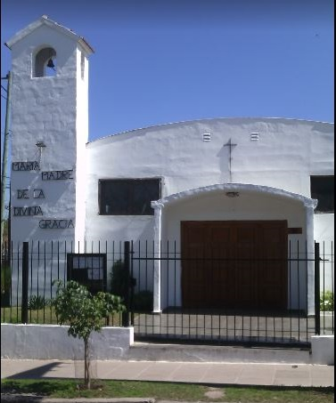

Parroquia San Miguel Arcángel - Córdoba - Argentina
1990 - 2020 Celebramos el 30° Aniversario
Home
Quienes Somos
Importante
Galeria
Horarios
Catequesis
Santa Misa
Confesiones
Comunidades
Divino Maestro
Divina Gracia
Nuestra Señora de la Salud
María Madre de las Vocaciones
Pastorales
Caritas
Madres Orantes
Familia Rog
Renovación Carismática
Palabra de Vida
Las Marianitas
Oración Centrante
Catequesis
Ministros Extraordinarios
Pastoral de Bautismo
Logística e Infraestructura
Pastoral de la Comunicación
Madrugadores
Contacto
Enlaces
Información de la Capilla
